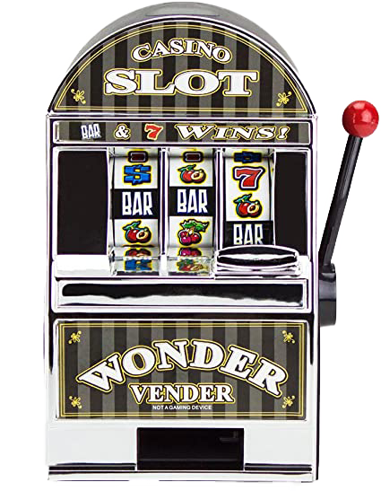

Ayo what's with this track, mang? We about to rap about pachinko? とにかく、DemonDICE ともうします。さって、始めましょう! Na-nana-na-na- 何 the fuck? I'm the Satan-flow demon on the set, what's up? Originality? Yo I got that shit on tap 'Cause I've been drowning in the melodies of Japanese net rap Jesus Jesus Japanesus The far-east vibes are my goddamn steez but Probably a little strange lookin to some So allow me to elaborate on where I came from They say America’s the land of milk and honey More like the land of crime, drugs, guns, hoes, and money At least according to the SoundCloud rappers today “You're gonna make it in the game," every time you press play The demon started screamin’ that the music wasn’t good enough Satan said I wasn’t black, male, or hood enough But the demons in the East never cease to inspire Ham-Kyou ”百パセント” Rapanese fire! Ya know my parents didn’t even see me comin’ and goin’ Cuz I’ve been running off to other worlds without 'em knowin', y'know? I guess I got a little bit tired of wishing Went ahead and hung a sign up on my door “gone fishing” Like, "sayonara, peace out, see ya later! I’m the number one champion master baiter!" You’d be doin’ me a favor if you came along to savor the flavor Born in every hemi-demi-semi-quaver Been here for a little while, biding my time All the other demons thinkin I’ve been drinkin’ to spit rhymes Nah, but that’s fine, takes time to find The confidence to rap, spit, speak your mind So if you wanna make small talk, beatin’ your gums And rubbin’ your thumbs together cuz you think that you’re better Well that’s a sorry display of different shit, same day Next time, it’s “さよなら” no “じゃまたね” Ya know I'm fixin' to dip out, So just to recap: If you ain’t from the hood, then don’t rap about it See, because here in Hell, we don’t factor in social roles Me and all my demonkin rap to buy back our souls Every single prime-time crime show multiplied By 66 times comes alive here "I’ll be here awhile," that’s a healthy assumption Day 666 down in Satan’s rap dungeon Satan-sama, お願い Turn that bass up hella high! Devils, demons 鬼、妖怪 Everybody got a soul to buy back! Rappin' apparitions with, well, mental conditions Cuz we're all a little crazy here, sincerely mobbin' so severely! Satan-sama, お願い Turn that bass up hella high! Devils, demons 鬼、妖怪 Everybody got a soul to buy back! Rappin' apparitions, when we get up in our stance You know that 神さま doesn't stand a chance Put your hands up! When first started rapping thought I'd hit it and quit it Now I'm out to prove you don't gotta be ghetto to spit it Though I salute to the ones who have had it rough World full of imitators and I've heard enough Besides, why you gotta curse in every verse that you rap in? Excessive use of "motherfucker" just to fill all the gaps in We've heard a million times about your hoes and swagger Are you gonna live and die another SoundCloud rapper? Gotta realize that it's not the rhymes compelling you The back of your mind, you know society is telling you Rebelling's the only way to have any fun In the "Land of the Free" know that all that you need is a problem? Got one, lemme grab my shotgun Fire off a couple shotties just to see the pricks run "Guns for all Americans!" Wow what a place! Soundin' such a good idea 'til I point mine in your face I'll take my words and I'll use 'em as a weapon Inspiring anxiety in every room I step in I already do that, I'm mobbin' on the other side of the world The homies turn around they see a fuckin' white girl (外人ですか？) So ragtime rustlers, Honky-Tonk Hustlers Stand the the hell up if you vibe with this, sir Mister? Get to ditchin' with your generation of riches Or somebody here is gonna end up in stitches So a toast to the homies who have been where I've been: "私は怖いなアメリカ人" Yo, how you gonna make those foreign lyrics stick? LOL smiley-face, suck my dick Think I'm here to spit the same shit? Man, please And well no, I'm not tryin' to be a Japanese But "code-switching" sounds bitching, if you can hack it Though I'd like to take a minute here and try to back-track it to... Satan-sama, お願い Turn that bass up hella high! Devils, demons 鬼、妖怪 Everybody got a soul to buy back! Rappin' apparitions with, well, mental conditions Cuz we're all a little crazy here, sincerely mobbin' so severely! Satan-sama, お願い Turn that bass up hella high! Devils, demons 鬼、妖怪 Everybody got a soul to buy back! Rappin' apparitions, when we get up in our stance You know that 神さま doesn't stand a chance Put your hands up! Na-nana-na-na, 何 the fuck? Alright! We're all a little crazy here, sincerely mobbin' so severely Na-nana-na-na, 何 the fuck? Alright! You know that 神さま doesn't stand a chance Put your hands up! Na-nana-na-na, 何 the fuck? Alright! Alrighty... Like I said, six to dip out. So um... Na-nana-na-na, 何 the fuck? Alright! 1 から2から3から終わり Ayo, no offense to SoundCloud I'm up in that bitch too Hehe... ヽ(o＾▽＾o)ノ the creature central street shootout wizard realm (WIP) 